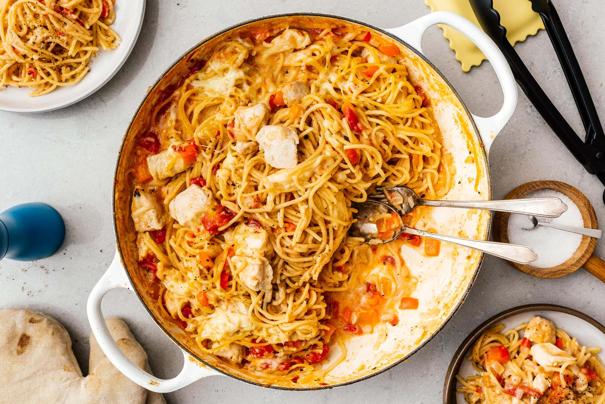

Spaghetti Recipe

Description
- 1 pound spaghetti
- 2 pounds lean chicken meat
- 1 onion, minced
- 1 (6 ounce) can tomato paste
- 2 (10.75 ounce) cans condensed tomato soup
- 2 1/2 cups water
Steps
- Bring a large pot of lightly salted water to a boil. Add pasta and cook for 8 to 10 minutes or until al dente; drain.
- In a large skillet over medium heat, cook ground beef with onion until meat is brown. Drain. Return meat mixture to pan with tomato paste, tomato soup and water. Cook, stirring, until heated through and thickened, 5 to 15 minutes. Serve over cooked pasta.